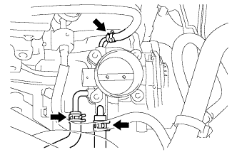
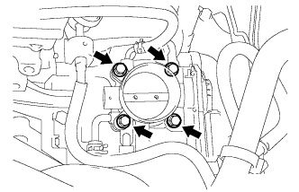

Throttle Body Assembly (2AZ-FE) Installation |
| 1. Install Throttle Body Assembly (w/ Motor) |
 |
Install a new gasket to the intake manifold.
 |
Temporarily install the throttle body assembly, and connect the water bypass hose, water bypass hose No.2 and purge line hose to the throttle body assembly.
 |
Install the throttle body assembly with the 4 bolts.
 |
Connect the throttle body connector.
| 2. Install Air Cleaner Cap w/ Air Cleaner Hose |
Install the hinge portion first, then install the air cleaner cap with the 3 clamps.
 |
Install air cleaner hose No.1 to the throttle body assembly and release the lock of air cleaner hose clamp No.1.
 |
Connect the clamp and intake air flow meter connector.
 |
Connect the fuel vapor feed hose and fuel vapor feed hose No.2 to vacuum switching valve assembly No.1.
Connect the clamp and vacuum switching valve connector.
Connect the ventilation hose.
| 3. Add Coolant (Toyota Genuine Super Long Life Coolant) |
Close the radiator drain cock plug.
Close the cylinder block drain cock plug.
 |
Fill coolant of the specified concentration up to the B line of the radiator reserve tank.
After installing the reservoir tank cap, warm up the engine until the thermostat opens. (A)
After warm-up, repeat the cycle of 3000rpm engine speed for 5 seconds ←→ idling for 45 seconds 8 times or more (7 minutes or more). (B)
Stop the engine and wait until the coolant cools down, and if the level is below LOW, add coolant of the specified concentration through the filler again and adjust it to between FULL and LOW. (C)
Repeat steps (A) to (C) until the coolant level in the radiator reservoir tank stops dropping.
When the level stops dropping, add coolant of the specified concentration through the filler again to adjust the coolant level in the radiator reservoir tank to between FULL and LOW.
| 4. Inspect for Coolant Leaks |
| 5. Connect Battery Negative Terminal |
| 6. Throttle Body Function Inspection |
Disconnect the battery negative cable, wait 60 seconds or more, and then connect the battery negative cable.
After connecting the battery negative cable, turn the IG ON without operating the accelerator pedal.
Connect SST (TaSCAN) to DLC3 and clear the DTCs. (see)
Start the engine and check that the check engine warning light is not on, and that the idle speed is within the standard when the A/C is turned ON ←→ OFF after warm-up.
When the accelerator pedal is quickly depressed to near fully open, check that the value of [ECU Data Monitor] - [Throttle Sensor No.1 Voltage Ratio (THP1)] is 60% or more.
Perform a road test and check that there is nothing unusual.
| 7. Setting Procedure When Disconnecting/Reconnecting Battery Terminal |
Reference